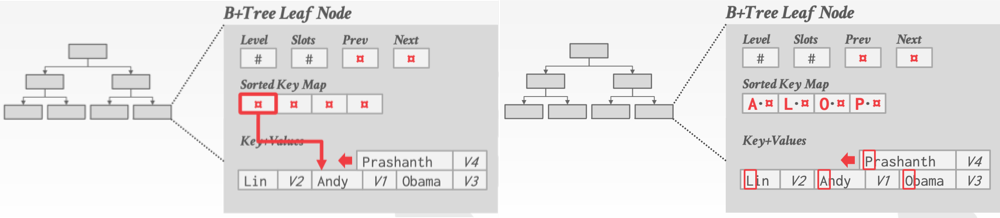
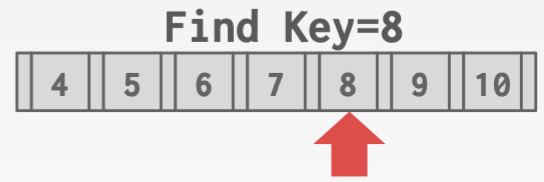
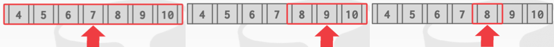
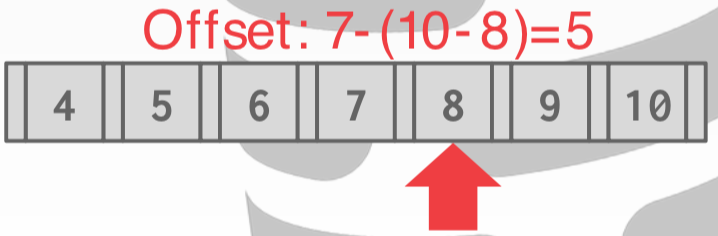

Trees Indexes I
约 4367 个字 预计阅读时间 15 分钟
review：
我们上节讨论了DBMS系统内部的 data structure：
- Internal Meta-Data（内部元数据） ：跟踪数据库和系统状态的信息。
- Core Data Storage（核心数据存储） ：可以用作数据库中 tuple 的基础存储。数据库所存储的数据，可以被组织成一个 hash table 或 B+ tree 或者其他树结构。
- Temporary Data Structures（临时数据） ：执行查询或者高效计算时临时创建的数据结构。
- Table Indexes（表索引） ：本质是用 tuple 的 key 构建一个目录，辅助我们快速查找到某个 tuple，避免顺序检索
对于前三种数据结构，（许多场景中）使用 hash table 就足够。因为无需经常进行范围查询，大多数情况下的使用场景就是给它一个 key 返回对应的 value（点查找）。
这节将讨论 Table Indexes ，这实际是我们想完成范围查询所需要的，这种情况下 hash table 已不能满足需求，它只能进行单个key的查找。
Note
Hash Table：是点查找，需要完整的key进行检索，无法进行范围的检索查询，如id > 3
B+Tree：可以使用 key 的部分内容进行检索，可以进行范围的检索查询。
前三种数据结构使用 Hash Table 就足够，Hash Table 也可以作为表的 Hash 索引，但对于表索引，更通用的还是使用 B+Tree。
Indexes¶
table index ：a replica of a subset of a table's attributes（表中某些属性的副本），他们被按照特定的排序和组织起来以支持快速的检索和更新。
- 表索引让 DBMS 比执行顺序扫描更快地找到元组。
- DBMS确保表和索引的内容总是同步的，对 tuple 的修改能实时反映到索引中。
- 索引对于应用程序开发人员应该是透明的，他们操控的是数据库，并不关心索引如何同步，但是他必须要有一组同步机制在那里。
- 需要权衡每个数据库创建的索引数量（使用大量索引能让查询更快，但存储和维护的代价更大）。
DBMS的任务是找出用于执行查询的最佳索引。这实际上就是查询优化的问题，这个之后会介绍。我们不会去讨论你们该使⽤哪种索引（这也是数据库中的另一个难题），今天我们主要介绍的就是B+树。
B+Tree¶
B树实际上是一组特定的数据结构的统称 ，有B树（1971）、B+树（1973）、B*树（1977?）、Blink树等等。很多时候他们会被混起来用，但是在数据库系统中，即便某些数据库说他们用的是B树，实际上指的也是B+树（大多数情况下），这是一个概念的问题。
Info
目前为止，好像还没数据库系统使用B树，PostgreSQL ⽂档中表示使⽤它使用B树，但源码里其实是B+树。
我们今天所谈的B+树实际上也跟其1973年论文里的定义有所区别。现代的B+树实现结合了其他B树变体的功能，比如Blink树中使用的兄弟指针（sibling pointer）。
B+树：是一类自平衡树，B 实际上就取自于英文单词 Balance。它保持数据的排序，并允许在 \(O(log n)\) 中进行搜索、顺序访问、插入和删除。它针对面向磁盘的 DBMS（会读/写大块数据）进行了优化。
- 相比于B树，B+树的优点在于当我们遍历B+树的底部（B+树的所有叶子结点）时，能按照顺序读取所有数据。
- B+树的思想来源于二叉搜索树，不过B+树允许一个结点可以有超过2个叶结点。它是为了在磁盘上快速检索数据而设计出来的一个至今为止仍然得到广泛运用的数据结构。
形式上，B+树是多（M）路搜索树，具备如下 性质 ：
- 完美平衡：每个叶结点都有相同的深度 \(O(log n)\) 。每次修改数据后，都会调整。
- 除根节点外的每个内部结点至少是半满的（(M - 1)/2 <= num of keys <= M−1，M 是该结点出来的路径数）。
- 每个有 k 个 key 的中间结点都有 k+1 个非空的孩子结点。
一个结点的 degree 为 M，则最多可以有 M 个 pointer（向下的路径），M-1 个 key
每个B+树的结点都是一组 key/value 对的数组：
- 每个结点上的数组（几乎）按 key 排序。
- key ：来源于我们要建立索引的属性的值
- value ：根据是 Inner Node（非叶子节点）或者 Leaf Node（叶子结点）有不同的选择。
- inner node 的 value 是指向其他 node 的指针。
- leaf node 的 value 是具体的数据：① tuple 的 record id；② tuple 本身
Note
通过 sibling pointer 可以遍历所有的叶子结点，就是循序扫描。
只有叶子结点有 sibling pointer，inner node 没有。
👇这个B+树的 degree=4，因为 inner node 最多能存 3 个 key，因此可以有 3+1=4 个 pointer。
B+树的叶子结点实际存储时，将 key 和 value 分开存储，key 中存储对应 value 的 offset。这样就可以支持二分搜索以提高检索效率。因为二分搜索中不需要 value，先要去找到所要的 key，拆分 key 和 value 可以实现 key 之间的高效跳转。
对于叶子结点中存储的数据类型：
- 存储 Record Id，然后根据 Record Id 去检索对应的 tuple。🌰 PostgreSQL、DB2
- 直接存储 Tuple 的数据。🌰 SQLite、MySQL
- 二级索引必须存储 Record Id 作为他们的值。
- SQLServer、oracle 二者都支持，默认使用第一种。
B树 VS. B+树¶
- B树的key不允许重复且数据可存储在任何结点；B+树中的 key 可以重复，但数据只能存储在叶子结点中。
- 实际上B树的性能是高于B+树的（因为 key 不允许重复，所以对空间的利用率更高），但是却很少得到使用，这是因为B+树在多线程下的表现好于B树。比如，B树中一个 inner node 进行了修改，需要将这个修改向下和向上进行传播，则要在这两个方向上都加 latch，但B+树中只对leaf node进行修改，则只需要向上传播这个修改。
插入¶
- 根据 inner node 找到正确的leaf node L。
- 将 entry 按顺序添加到 L 中：
- 如果 L 有足够的空间，则操作完成。
- 否则将 L 分为两个结点 L, L2。重新均匀分配原本 L 中的 entries（将原 L 的 key 平均分，找到一个中间位置 middle key；小于 middle key 的 key 放在一个结点，大于的放在另一结点），更新 L 的父结点让它包含 middle key。将指向 L2 的指针 node* 插入到 L 的父元素中。 （这可能是个递归操作，向父结点插入时，父结点可能也没有空间，最后可能重构整个树）
- 若要分割 inner node，请均匀地重新分配 entries，向上 push middle key。
可视化B+树算法：https://cmudb.io/btree
删除¶
- 根据 inner node 找到正确的leaf node L。
- 删除对应的 entry：
- 如果 L 至少是半满的，则操作完成。
- 否则（L只有M/2−1个 entry），尝试重新分配——从兄弟集结点那儿借元素。
- 如果再分配失败，合并 L 和兄弟结点。（合并后的结点可能太满，则需要拆分）
-
如果发生合并，则必须删除父结点中指向 L 的 entry。
（这可能是个递归操作，父结点删除时，可能让父结点的key数目小于半满，最后可能重构整个树）
查找¶
使用B+树的索引可以提供任意属性的检索（不用提供一个完整的 key，可以只使用 key 的部分内容进行检索）。🌰 index on <a, b, c>, supported: (a=5 AND b=3)
这就比 hash table 提供了更为优越的的性能（hash table 必须提供完整的 key 进行检索）。
聚集索引¶
数据库中的 table heap 是无序的，因此可以任何顺序将 tuple 插入到任何 page。如果我们希望 tuple 按照主键（primary key）排序存储，可使用聚集索引。
聚集索引(clustered index)：保证 page 中的 tuple 按照 primary key 的顺序排序。这样就可以快速的拿到数据。（根据 primary key 就能得到想要的 tuple，否则通过 key 得到 record id 可能指向另一个 page，则要读到想要的数据还要进行大量随机 I/O）
不是所有数据库都支持聚集索引。MySQL 默认使用聚集索引，将 tuple 保存在叶子结点上，保证磁盘中 page 的 tuple 都按照主键顺序排序。若没有定义主键，MySQL会帮你定义一个（使用 row id 或者 record id 之类的作为主键），对你而言，这是透明的。
B+Tree 设计准则¶
结点大小：
- B+树的最佳结点大小取决于磁盘的速度。其思想是通过尽可能多的 key/value 对，分摊将结点从磁盘读入内存的成本。磁盘速度越慢，则希望结点 size 越大；若磁盘速度很快则跳到不同节点间随机 I/O 的速度非常快，那么节点就可以使用更小的 size。
- 最佳结点大小还取决于所进行的操作/查询。若进行叶子结点的循序扫描，则更适合 size 更大的结点，因为可进行更多的循序 I/O；若进行 Root-to-leaf 的查找/遍历，则需进行大量的随机 I/O，则更适合 size 更小的结点。
合并临界点：
- 当节点没有达到半满状态的情况下，可能实际上不需要立即进行合并操作，因为可能下次操作是插入数据，之前做了合并现在又拆开来，那么就会有代价，合并和拆分的代价都很昂贵。
- 一些 DBMS 在半满时并不总是合并。延迟合并操作可能会减少重组的数量。
- 由于 merge 操作引起的修改较大，有些 DBMS 选择延迟 merge 操作的发生时间，甚至可以利用其它进程来负责周期性地重建 table index。
可变长度的 key：
之前的介绍中 key 和 value 的都是固定长度的，实战中 value 是固定长度的，而如何在结点中保存可变长度的 key，以下是相应的解决方法：
- 指针：将 key 存储为指向 tuple 属性的指针。（很少使用）
- 可变长度结点：允许B+树中每个结点的大小发生变化，但需要仔细记录管理。（也很少用）
- 这其实是个 bad idea，因为在 Buffer pool 和磁盘中 page 的大小应该始终保持一致，这样才无须担心该如何找到空闲的空间把数据放进去。
- 填充（padding）：不管是什么 key，都使用 null 或者 0 对其填充，以此来适应结点的大小。
- 虽然有一些数据库系统采用了这个方法，然而这存在 trade-off，虽然数据能保存，但空间被浪费掉了，这也是为什么说确保 schema 的正确定义是非常重要的（若某个 varchar 属性最大需要50个字符，就不要将 varchar 大小设置为1024，这在填充时会浪费很多空间）。
- key 间接映射：嵌入一个Sorted Key Map ，映射到 node 结点内的 Key+Value 列表。这与前面讨论的 slotted page 类似。（最常见的方法）
 - Sorted Key Map 中，一个指针指向该结点中 key+value 列表对应的 offset 值（即指向当前 page），而不是指向其他任何 page。
- Key+Value 列表从后往前存储，Sorted Key Map 从前往后存储。若该结点没有足够的空间存储数据，则可使用一个 overflow page 接着存。
-
优化此查找：将每个字符串的首字母放在 Sorted Key Map 中，在查找时，若 key 无法与这第一个字符准确匹配，则无需继续根据 offset 找到对应完整 key 了。
Warning
这个优化都是在内存中做的，因为可以避免 cache miss，同时让二分查找或其他查找变得更快
非唯一索引：
- Duplicate Keys：使用相同的叶结点布局，但存储 Duplicate Keys 多次。（更常用）
- Value Lists：每个键key存储一次，并维护一个唯一的value的链表。
结点内搜索方式：
- Linear：从头到尾扫描结点中的 key/value 项。找到要找的 key 就停下来。这并不需要对 key/value 项的 entries 进行预先排序。
 - Binary：跳到 middle key，然后比较 search key 与 middle key 的大小决定向左还是向右走。这需要对 key/value 项的 entries 进行预先排序。
 - interpolation：根据结点中已知的 low/high key值（key的分布信息），通过数学方法近似 search key 的起始位置，然后从该位置进行线性扫描。这需要对 key/value 项的 entries 进行预先排序。
 此处，数据的存储规律是单调递增，数组中共有 7 个key，key 的最大值是 10，则要找 8 时可用以上公式。但是这种情况，不适用于浮点数和字符串的查找。
B+Tree 优化¶
前缀压缩¶
Warning
前缀压缩基于 key 都是有序排列。
- 同一叶结点中的排序的 key 很可能具有相同的前缀。
- 每次不存储整个key，而是提取公共前缀，只存储每个key的唯一后缀。
这个优化会引起性能上的巨大差异，因为这样做节省了大量的空间（在数据库中，重复的数据实在是太多了）
另一种类似的优化是在 聚簇索引 中，因为所有的 tuple 都放在磁盘或者 page 中，且在索引中它们是以排序存在的，那么 tuple 有可能在同一个结点上，它们的 record ID 会使用相同的 page ID，这时也没必要把这种情况下单个 tuple 的 page ID 反复存放在一个结点中，而是只保存一次 page ID，然后将它们的 offset 值或者 slot 分开存放。
后缀截断¶
- inner node 的 key 只用于判断往哪个方向走，因此无需存储整个 key，只需存储能区分 key 的最小前缀，其他后缀都抛弃。
- 在 leaf node 中仍然要存储整个 key，用于判断真正找到了这个 key，但在 inner node 中无需保存完整的 key 用于当做路标。
前缀压缩比后缀截断更常用。
批量插入¶
Info
从头开始构建B+树的最快方法是（批量加载数据）先对所有 key 排序，然后从下往上构建索引。这将比逐个插入更快，因为这是自下而上去构建树不是自上而下，则没有分割或合并。
实现方法：
- 先对 key 进行排序，然后将它们排列在叶子节点上，正确地填入到叶子节点中。
- 然后自下而上，只需要使用中间 key 来填充 inner node，并生成对应的指针。
批量插入是任何主流数据库系统都支持的一种标准技术，构建索引的速度非常快。
Pointer Swizzling¶
实际上，在数据库实现的 B+ Tree 中，节点保存的指针并不是原始的内存指针，而是 page id。
比如查找 key > 3 的数据。在根节点处，保存了该索引的 page id。然后需要到的 Buffer Pool 中找 page # 2（如果它不在内存中， Buffer Pool 需将它加载进内存），最终返回一个指向它的指针。拿到指针后，就可以对该结点进行遍历。对兄弟结点的遍历同理，也许到Buffer Pool 中找 page # 3，得到对应的指针。
但这样做的代价很高，因为必须使用 latch 来保护 Buffer 池中的 hash 表，要花很多步骤才能拿到这个指针。
所以为了解决上述问题，pointer swizzling 的思路是，如果我知道所有固定在内存中的 page，这意味着我知道他们不需要从内存中被移除，那我结点中就不用保存 page id，而是直接保存 page 指针，这样就不用访问 Buffer Pool，也会避免上面的一些问题。
Warning
这须确保若该 page 被从内存中移除，即该 page 需写到磁盘时，不再能保存 page 指针。因为当该 page 被重新放入内存时，其地址会改变。
对于树的上层部分，比如根节点或者是树的第二层处的节点，它们的使用频率都非常高，因为都需要经过它们才能访问到下一级的节点的数据，所以将这些上层节点数据对应的 page 固定住可能并没有什么大问题，比起整个树的 size 来讲，这些上层节点所占的体积还是比较小的。那么针对这种情况就可以使用这种优化策略，因为 page 固定，指针始终有效。
Pointer Swizzling 实际上非常普遍，很多主流数据库系统中都使用 Pointer Swizzling。
颜色主题调整
评论区~
有用的话请给我个赞和 star => 快来跟我聊天~
快来跟我聊天~